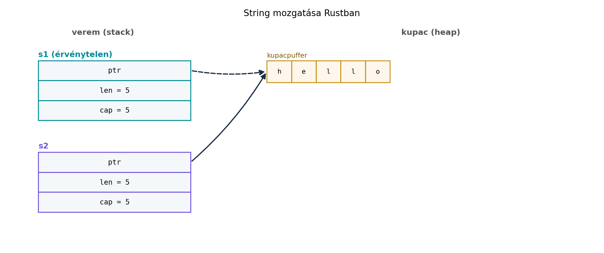

Egy évtizedes C++-fejlesztőként pontosan ismeri azokat a hibákat,
amelyek a leghosszabb éjszakákat okozzák: a lógó referenciát, amely egy
lefutott függvény lokális változójára mutat; az iterátort, amelyet egy
push_back hívás érvénytelenít; a két szálat, amelyek
egyszerre írnak egy megosztott egész változót. Ezek a hibák C++-ban
többnyire lefordulnak, és csak futás közben – gyakran hetekkel később,
éles környezetben – jelentkeznek. A Rust legfontosabb ígérete, hogy az
ilyen hibaosztályokat a biztonságos részen már fordítási időben kizárja,
méghozzá úgy, hogy a futási teljesítményt nem áldozza fel.
A C++ a teljesítményért cserébe a programozóra bízza a memóriabiztonságot. A következő hibaosztályok mind nem definiált viselkedéshez (undefined behavior, UB) vagy logikai hibához vezethetnek, és a C++ fordító általában nem állítja meg őket:
nullptr-t
dereferálunk.A Rust ezeket a biztonságos kódban nem egyetlen eszközzel zárja ki: egy részüket a fordító statikusan, egy részüket a standard könyvtár futásidejű ellenőrzéssel, egy részüket pedig a típusrendszer azzal, hogy a hibás állapotot ki sem lehet fejezni.
| Hibaosztály | Mechanizmus a safe Rustban | Jelleg |
|---|---|---|
| lógó referencia | élettartam-ellenőrzés (borrow checker) | statikus |
| use-after-free, double-free | ownership és mozgatás: egy tulajdonos, a mozgatott változó nem használható | statikus |
| iterátor-invalidálás | kölcsönzési szabály: amíg él egy & (például
iterátor), nincs &mut |
statikus |
| data race | Send/Sync trait-ek, illetve
&mut kizárólagossága |
statikus |
| null pointer dereference | safe kódban a referencia nem lehet null; a hiányt az
Option<T> fejezi ki, és a kezelés explicit (a nyers
mutató lehet null, de csak unsafe-ban dereferálható) |
statikus (típusrendszer) |
| buffer overflow | az indexelés és a slice-képzés határellenőrzést végez, túlindexeléskor pánik | futásidejű |
RefCell kettős kölcsönzése |
a borrow/borrow_mut számlálót ellenőriz,
ütközéskor pánik |
futásidejű |
| egész túlcsordulás | debug buildben pánik, release buildben körbefordulás (nem UB) | futásidejű / definiált |
A határellenőrzés tehát nem a borrowing része: a kölcsönzési szabály a referenciák egyidejűségét korlátozza, azt nem, hogy egy index a tartományon belül van-e. A statikus mechanizmusok ára nulla futásidőben; a futásidejű ellenőrzéseké kicsi, de nem nulla (lásd lejjebb a határellenőrzést). A hibaosztály-lista nem csupán elmélet: a későbbi alfejezetekben mindegyikre konkrét nyelvi mechanizmust építünk.
A Rust három alappillére adja a biztonságot:
mem::forget, Box::leak,
Rc/Arc-referenciaciklus és abort
esetén az eldobás elmarad, Rc/Arc-nál pedig a
fogantyú eldobása csak az utolsó erős hivatkozás megszűnésekor dobja el
a mögöttes értéket. Ez szünteti meg a use-after-free és a double-free
lehetőségét.&T), vagy írhatók (kizárólagos,
&mut T), de egyszerre nem lehet több író vagy egy író
és olvasó. Ez zárja ki az iterátor-invalidálást és a lógó referenciát; a
buffer overflow ellen nem ez, hanem a futásidejű határellenőrzés
véd.Send és Sync: az előbbi
azt jelöli, hogy egy érték átvihető egy másik szálra, az utóbbi azt,
hogy egy referencia megosztható szálak között. A data race így fordítási
időben kiszűrhető, mert a nem szálbiztos típusok nem léphetnek át
szálhatáron.Ezeket a fogalmakat itt még csak előzetesen vezetjük be; a részletes szabályokat az Ownership: minden értéknek egy tulajdonosa van, a Referenciák és a kölcsönzési szabály: sok olvasó XOR egy író és a Szálak, Send és Sync: data race fordítási időben kizárva alfejezetek fejtik ki.
Definíció. A biztonságos Rust (safe Rust) a
nyelv unsafe nélküli része. Ebben a fordító statikus
elemzése és a standard könyvtár futásidejű ellenőrzései együtt
garantálják a memóriabiztonságot és az adatverseny-mentességet,
feltéve, hogy a felhasznált unsafe kód (a standard
könyvtárban, a függőségekben és az FFI-hívások mögött) helyes.
Definíció. A nem definiált viselkedés (undefined behavior, UB) olyan nyelvi szabálysértés, amelynek a szabvány nem ír elő semmilyen viselkedést; a program bármit tehet, akár „működik”, akár lefagy, akár biztonsági rést nyit.
Definíció (soundness). Egy unsafe kódot
tartalmazó függvény, típus vagy könyvtár akkor sound (helyes),
ha semmilyen safe kódból érkező hívássorozat nem tud vele nem definiált
viselkedést kiváltani.
Szabály. Ha egy program saját kódja safe, és minden felhasznált könyvtár sound (az FFI-n hívott külső kód pedig betartja a szerződését), akkor a programban nem fordulhat elő nem definiált viselkedés; a fenti hibaosztályok (use-after-free, double-free, data race stb.) nem léphetnek fel. Ez feltételes garancia: egy unsound könyvtár safe hívása is okozhat UB-t.
Szabály. A Rust a veszélyes műveleteket az
unsafe blokkokra korlátozza. Az unsafe kódban
a fejlesztő felel a memóriabiztonsági invariánsok betartásáért, a safe
kóddal való interfésznek pedig biztonságosnak kell lennie.
Nézzük a lógó referencia klasszikus C++ példáját:
#include <string>
#include <iostream>
std::string& dangling() {
std::string s = "hello";
return s; // UB: referencia a lefutott függvény lokális változójára
}
int main() {
std::string& r = dangling();
std::cout << r << '\n'; // olvashatatlan memória
}Ez a kód C++-ban lefordul; a nyelvi szerződés nem tiltja, és a
diagnózis nem kötelező. A GCC -Wall-lal és a Clang
-Wall-lal tipikusan figyelmeztet a lokális változóra
visszaadott referenciára (-Wreturn-local-addr, illetve
-Wreturn-stack-address), de ez opcionális figyelmeztetés,
kikapcsolható, és a program viselkedése ettől még UB marad. A
Rust-példát egyetlen tanított hibára szűkítjük. (A paraméter nélküli
fn dangling() -> &String már a függvény fejlécénél
az E0106 hibával, a hiányzó élettartam-megnevezéssel állna
meg; azt az Élettartam-annotációk és az elision
szabályai alfejezet tárgyalja. Itt azt akarjuk látni, hogy a
lokális változóra mutató referencia visszaadása hibás, ezért a
függvénynek van egy bemeneti referenciája, amelyből az élettartam
kikövetkeztethető.) A Rust megfelelője nem fordul le:
fn dangling(_hint: &str) -> &String {
let s = String::from("hello");
&s // visszaadunk egy referenciát a lokális változóra
}
fn main() {
let r = dangling("x");
println!("{r}");
}Ez a változat szándékosan nem fordul le. A fordító 1.99.1-es kimenete
(a fenti forrásból, src/main.rs):
error[E0515]: cannot return reference to local variable `s`
--> src/main.rs:3:5
|
3 | &s // visszaadunk egy referenciát a lokális változóra
| ^^ returns a reference to data owned by the current functionA különbség lényege: a Rust borrow checker ismeri az élettartamokat,
és tudja, hogy az s változó a függvény végén felszabadul. A
visszaadott referencia így érvénytelen lenne, ezért a kód már fordítási
időben hibát ad, nem pedig futás közben.
Az iterator-invalidálás is hasonló. C++:
#include <vector>
#include <iostream>
int main() {
std::vector<int> v = {1, 2, 3};
int& first = v[0];
v.push_back(4); // ha a kapacitás elfogy, reallokál: a first érvénytelen
std::cout << first << '\n'; // UB reallokáció esetén (a kapacitáson belüli push_back után a referencia érvényes maradhatna)
}Rust:
fn main() {
let mut v = vec![1, 2, 3];
let first = &v[0];
v.push(4); // megpróbálunk mutable kölcsönzést, miközben `first` él
println!("{first}");
}Ez a változat szándékosan nem fordul le:
error[E0502]: cannot borrow `v` as mutable because it is also borrowed as immutable
--> src/main.rs:4:5
|
3 | let first = &v[0];
| - immutable borrow occurs here
4 | v.push(4); // megpróbálunk mutable kölcsönzést, miközben `first` él
| ^^^^^^^^^ mutable borrow occurs here
5 | println!("{first}");
| ----- immutable borrow later used hereAz alábbi ábra egymás mellé teszi a két esetet: a C++-ban a
reallokáció futás közben hagyja a first referenciát a
felszabadított pufferen, a Rustban ugyanez az átfedés fordítási
hiba.
A kölcsönzési szabály (sok olvasó XOR egy író) tehát nemcsak a szálak közötti, hanem az egyszálú, moduláris kódban is kizárja az érvénytelen referenciákat.
A C++ 11 óta a mozgatási szemantika lehetővé teszi, hogy egy objektum erőforrásait átadjuk egy másik objektumnak. A moved-from objektum azonban C++-ban a standard könyvtár típusaira érvényes, de nem specifikált állapotú marad (ez a garancia nem terjed ki automatikusan minden felhasználói mozgató konstruktorra; a „nem specifikált” és az „implementációfüggő” a C++ terminológiában két külön kategória). Gyakori csapda, hogy a fejlesztő mégis használja, feltételezve az eredeti értéket:
#include <string>
#include <iostream>
int main() {
std::string s1 = "hello";
std::string s2 = std::move(s1);
std::cout << s1 << '\n'; // nem UB, de s1 tartalma nem specifikált (lehet üres, lehet "hello")
}A Rust a mozgatást destruktív mozgatásként kezeli: a forrás változó a mozgatás után érvénytelenné válik, és a használata fordítási hibát okoz. Ez a kód szándékosan nem fordul le:
fn main() {
let s1 = String::from("hello");
let s2 = s1; // s1 mozgatva, innentől érvénytelen
println!("{s1}"); // fordítási hiba: borrow of moved value (E0382)
}Hibaüzenet:
error[E0382]: borrow of moved value: `s1`
--> src/main.rs:4:16
|
2 | let s1 = String::from("hello");
| -- move occurs because `s1` has type `String`,
| which does not implement the `Copy` trait
3 | let s2 = s1;
| -- value moved here
4 | println!("{s1}");
| ^^ value borrowed here after move
|
help: consider cloning the value if the performance cost is acceptable
|
3 | let s2 = s1.clone();
| ++++++++A javítás attól függ, mit akarunk. Ha az eredeti értékre már nincs
szükségünk, használjuk az s2-t:
fn main() {
let s1 = String::from("hello");
let s2 = s1;
println!("{s2}"); // "hello"
}Ha viszont mindkét változót használni akarjuk, másolni kell:
fn main() {
let s1 = String::from("hello");
let s2 = s1.clone();
println!("{s1} és {s2}"); // "hello és hello"
}A mozgatás utáni állapotot a következő ábra szemlélteti. A
String a veremben egy mutatót, hosszt és kapacitást tárol;
a tényleges karakterek a kupacban vannak. Mozgatáskor a mutató átkerül
az új tulajdonoshoz, a régi s1 pedig érvénytelenné
válik.

A mozgatás tehát nem másolja a kupacadatot, csak a veremben lévő struktúrát másolja (bitenként), és a régi példányt a fordító statikusan érvényteleníti. Ez a destruktív mozgatás a Rust egyik kulcsfontosságú eltérése a C++-tól, ahol a mozgatás után a forrásobjektum érvényes, de nem meghatározott állapotú marad.
A C++ és a Rust is büszke a zero-cost absztrakcióra: ha nem használsz egy absztrakciót, nem fizetsz érte; ha használod, nem tudnád kézzel gyorsabban megírni. A Rust generikusai – a C++ sablonokhoz hasonlóan – monomorfizálódnak, azaz a fordító minden konkrét típusra külön kódot generál. A trait-objektumok pedig a virtuális függvényekhez hasonló dinamikus diszpécset adnak, de erről később lesz szó.
A biztonsági ellenőrzések azonban némi futási költséggel járhatnak. A leggyakoribb példa a határellenőrzés:
let v = vec![1, 2, 3];
let x = v[5]; // panic: index out of boundsA C++-ban v[5] UB, futás közben bármit okozhat. A Rust
biztonságos kódban ezt futásidőben ellenőrzi, és túlindexeléskor
pánikol: ez nem UB, de futási költség és hibalehetőség. Ez
tehát az a pont, ahol a Rust nem statikusan, hanem futásidejű
ellenőrzéssel ad biztonságot. A gyakorlatban a Rust fordító sok esetben
ki tudja optimalizálni a határellenőrzést, ha a határokat statikusan
ismeri, vagy ha egy iterátorral eleve nem léphetünk túl. Ahol mégis
megmarad, ott a biztonságért fizetünk.
Ugyanakkor a Rust az aliasing-információból profitál is. A
&mut T kizárólagos hozzáférési jogot ad: amíg
a kölcsönzés él, a hivatkozott memóriát csak ezen a referencián (és az
abból levezetett, ún. reborrow-kon) keresztül lehet olvasni vagy írni.
Ez nem azt jelenti, hogy sehol sem létezhet más mutató ugyanarra a
címre: nyers mutató (*mut T) létezhet, de ha használjuk,
miközben a &mut él és nem ő a forrása, az
unsafe kódban UB (lásd az Unsafe Rust:
szuperképességek és felelősség alfejezet nyers mutatós példáit). A
fordító arra az ígéretre építhet, hogy a &mut nélkül
levezetett más elérési út nem nyúl az adathoz, és ezért agresszívebben
optimalizálhat (például gyorsítótárazhat értékeket vagy vektorizálhat).
A reborrow az a mechanizmus, amellyel a &mut többször
felhasználható anélkül, hogy elveszne:
fn bump(x: &mut i32) {
*x += 1;
}
fn main() {
let mut n = 0;
let r = &mut n;
bump(r); // implicit reborrow: &mut *r
bump(r); // r továbbra is használható
*r += 1;
println!("{n}"); // 3
}C++-ban a restrict (GCC/Clang: __restrict)
hasonló célt szolgál, de nem része a szabványos C++-nak, és a fordító
nem ellenőrzi.
A Rust alapértelmezett módja a safe Rust. Ebben a
módban a fordító megakadályozza a memóriabiztonsági hibákat és a data
race-t. Vannak azonban olyan alacsony szintű műveletek, amelyeket a
fordító nem tud biztonságosnak bizonyítani: nyers mutatók dereferálása,
static mut változók elérése (olvasása és írása), nem
biztonságos függvények hívása. Ezeket az unsafe blokkban
lehet elvégezni:
fn main() {
let mut x = 10;
let ptr = &mut x as *mut i32;
// SAFETY: a ptr érvényes, és nem aliasingolódik.
unsafe {
*ptr = 20;
}
println!("{x}");
}Az unsafe kulcsszó nem teszi „rosszá” a kódot; csak azt
jelzi, hogy a fejlesztő felel a további invariánsokért. A Rust
ökoszisztéma filozófiája, hogy az unsafe kódot biztonságos
absztrakció mögé rejtjük, így a felhasználó továbbra is safe kódot
írhat. Erről részletesen az Unsafe Rust:
szuperképességek és felelősség alfejezetben lesz szó.
A nem definiált viselkedés (UB) fogalma mindkét nyelvben ismert. A
Rustban UB-t csak egy unsafe kód helytelensége okozhat, de
a hiba következménye nem marad az unsafe blokk
belsejében: ha egy unsafe blokk megsérti egy safe
absztrakció invariánsát (például egy hibás hosszt állít be egy
vektoron), a UB később, egy teljesen safe sorban jelentkezhet. Ezért nem
az unsafe blokk szöveges helye a lényeg, hanem a
felelősségi határ: az unsafe implementáció szerzője felel
azért, hogy a köré épített safe interfész semmilyen hívással ne
vezethessen UB-hez (lásd a soundness definícióját fent és a Biztonságos absztrakció unsafe alapon alfejezetet).
Sound könyvtárak mellett a safe kódban memóriabiztonsági UB nem
keletkezhet; a hibák kontrollált alakja a panic (a program
leáll, vagy a hívó a catch_unwind-del elkaphatja). Ez nem a
„legrosszabb” kimenetel: safe kód is okozhat végtelen ciklust,
erőforrás-kimerülést és adatvesztést, és memóriahiánynál a folyamat
abortálhat. A safe Rust tehát a memóriabiztonságot garantálja, nem a
program általános helyességét: logikai hiba, holtpont, memóriaszivárgás
(mem::forget, Rc-ciklus) safe kódban is
lehetséges. Ez fontos garancia, mert a UB C++-ban gyakran csendes
memóriakorrupciót okoz, amit nehéz reprodukálni.
A Rust nyelv nem csak szintaxisból áll: a Cargo a
hivatalos build rendszer és csomagkezelő, a crates.io
pedig a csomagregiszter. A C++-ban a CMake, a vcpkg, a Conan stb. külön
eszközök; Rustban minden egy helyen van. A Cargo.toml
deklarálja a függőségeket, a cargo build letölti és
lefordítja őket, a cargo test futtatja a teszteket. A
fejezet későbbi alfejezeteiben minden labor ezt használja.
A Rust edition-ök (2015, 2018, 2021, 2024)
crate-enként, a Cargo.toml edition mezőjében
választott nyelvi kompatibilitási szintek: egy edition a
szintaxis és a nyelvi viselkedés egy összefüggő, a fordító által
egységesen kezelt változatát jelöli. Három különböző dolgot kell
megkülönböztetni: az edition a nyelvi szint
(crate-enként), a rustc verziója a fordító kiadása
(például 1.99.1), a crate semver-verziója pedig a
csomag saját kiadási száma (version = "0.1.0"). Különböző
editionű crate-ek egy programban együtt használhatók, mert az edition a
crate-en belüli szintaxist és szemantikát érinti, az interfészeket nem.
A stabilitási ígéret feltételes: ami stabil Rusttal lefordult, az az új
stabil fordítókkal is lefordul, kivéve a dokumentált eseteket
(hibajavítások a típusellenőrzésben, a beállítástól függő lintek,
kiegészítések, amelyek metódusnév-ütközést okozhatnak). A
std API-ja bővül, a stabilizált elemek nem tűnnek el, az új
editionök pedig a régi kód működését nem törik, mert az átállás explicit
(cargo fix --edition).
Továbbvitt eredmény. Ez az alfejezet rögzíti a
hibaosztályok listáját, amelyre a későbbi fejezetek visszautalnak: az
ownership (Ownership: minden értéknek egy
tulajdonosa van) a use-after-free és a double-free ellen, a
borrowing (Referenciák és a kölcsönzési szabály: sok
olvasó XOR egy író) az iterator-invalidálás és az aliasing ellen, a
Send/Sync (Szálak, Send és
Sync: data race fordítási időben kizárva) a data race ellen, az
Option (Az enum mint összeg-típus és az
Option a null helyett) a null pointer ellen, a slice-ok (Slice-ok, String és &str, UTF-8) pedig a buffer
overflow ellen. Ezt a listát az Összefoglalás:
C++→Rust fordítási kézikönyv és továbbtanulás alfejezet is
hivatkozni fogja.
A borrow checker „legyőzése” klónozással. Amikor
a C++-fejlesztő a kölcsönzési hibákat .clone()-nal oldja
meg, valójában elkerüli a problémát, de felesleges másolással rontja a
teljesítményt. Ilyenkor inkább a referencia-élettartamok átszervezésére
vagy a típus kialakítására kell gondolni.
Az unsafe használata a biztonsági ellenőrzés
megkerülésére. A C++-ból jövő fejlesztő hajlamos lehet
unsafe blokkba csomagolni mindent, hogy „megszokott” nyers
mutatókkal dolgozzon. Ez aláássa a Rust biztonsági ígéretét; a valódi
cél az, hogy az unsafe-et minimális, jól dokumentált
absztrakciókra korlátozzuk.
A moved-from objektum használata. C++-ban a moved-from objektum érvényes (ha nem specifikált), Rustban a mozgatás után a forrás érvénytelen. Ez a szokás gyakran E0382 hibát okoz, amíg meg nem szokjuk a destruktív mozgatást.
(a) Fogalmi kérdés. Sorolja fel legalább öt
C++-hibaosztályt, és rendelje hozzá a Rust biztonsági mechanizmusát
(ownership, borrowing, Send/Sync,
Option, slice-határellenőrzés). Melyik hibaosztályt zárja
ki az Option?
(b) C++-kód átírása. Az alábbi C++ kód lógó referenciát okoz. Írd át idiomatikus Rustra úgy, hogy ne legyen lógó referencia, és a program kinyomtassa az értéket.
#include <string>
#include <iostream>
std::string& dangling() {
std::string s = "hello";
return s;
}
int main() {
std::string& r = dangling();
std::cout << r << '\n';
}(c) Implementációs feladat. Hozz létre egy új Rust
projektet cargo new move_demo paranccsal, és írd be a
use-after-move hibás kódot
(let s2 = s1; println!("{s1}");). Ellenőrizd a hibakódot
(E0382), majd javítsd a kódot úgy, hogy leforduljon és a várt kimenetet
adja. Dokumentáld, miért nem szabad a mozgatás után a forrást
használni.
(d) Tervezési döntés. Adott a következő C++ data
race példa: két szál növel egy közös int-et szinkronizáció
nélkül. Válassz Rust megoldást a probléma biztonságos kiküszöbölésére
(például Arc<Mutex<i32>>, atomi típus vagy
csatorna), indokold a választást, és írj egy lefordítható Rust vázlatot.
Ez a feladat előkészíti a Szálak, Send és Sync: data
race fordítási időben kizárva alfejezetet.
(a) A hibaosztályok és mechanizmusok: -
use-after-free → ownership (automatikus felszabadítás a tulajdonos
hatókörének végén) - double-free → ownership (a felszabadítás
kizárólagos felelőssége) - lógó referencia → borrowing
(élettartam-ellenőrzés) - iterator-invalidálás → borrowing (sok olvasó
XOR egy író) - data race → Send/Sync (nem
szálbiztos típus nem léphet át szálhatáron) - null pointer dereference →
Option (nincs null referencia) - buffer overflow → slice-ok
és határellenőrzés (pánikolás a UB helyett)
Az Option a null referencia hibaosztályát zárja
ki a safe kódban: a hiányzó értéket explicit None jelzi, a
match és az if let láthatóvá teszi a kezelést.
Nem akadályoz meg minden futási hibát (az unwrap()
None-ra pánikol), és a nyers *const T mutató
továbbra is lehet null, ezért a dereferálása unsafe.
(b) A javított Rust kód visszaadja a
String-et, nem referenciát:
fn dangling() -> String {
let s = String::from("hello");
s
}
fn main() {
let r = dangling();
println!("{r}");
}A String tulajdonjoga átkerül a hívóhoz, így nincs
érvénytelen referencia.
(c) A lépések:
cargo new move_demo
cd move_demoA src/main.rs hibás tartalma:
fn main() {
let s1 = String::from("hello");
let s2 = s1;
println!("{s1}"); // E0382: borrow of moved value
}A cargo run hibát ad a fenti E0382 hibakóddal. A
javítás:
fn main() {
let s1 = String::from("hello");
let s2 = s1;
println!("{s2}");
}Várt kimenet: hello. A mozgatás után a forrás
érvénytelen: ha mindkét változó érvényes maradna, a hatókör végén
mindkettő felszabadítaná ugyanazt a puffert (double free), a forrás
olvasása pedig a már felszabadított vagy reallokált pufferre mutathatna
(use-after-free); ezért a fordító a forrás minden további használatát
tiltja.
(d) Egy biztonságos megoldás
Arc<Mutex<i32>>-szel:
use std::sync::{Arc, Mutex};
use std::thread;
fn main() {
let counter = Arc::new(Mutex::new(0));
let mut handles = vec![];
for _ in 0..2 {
let counter = Arc::clone(&counter);
let handle = thread::spawn(move || {
let mut num = counter.lock().unwrap();
*num += 1;
});
handles.push(handle);
}
for handle in handles {
handle.join().unwrap();
}
println!("{}", *counter.lock().unwrap());
}Az Arc biztosítja a megosztott tulajdonlást, a
Mutex a kölcsönös kizárást. A counter típusa
Arc<Mutex<i32>>, amely Send és
Sync, így a closure átvihető a szálakra, és a data race
kizárt.
Ez az alfejezet bemutatta azokat a C++-hibaosztályokat, amelyeket a
biztonságos Rust kizár: a use-after-free, double-free, lógó referencia,
iterator-invalidálás és data race hibát fordítási időben, a null pointer
dereferálást a típusrendszerrel, a buffer overflow-t futásidejű
határellenőrzéssel (pánik). A nyelv ezt az ownership, a borrowing,
valamint a Send/Sync rendszerével éri el;
sound könyvtárak mellett a safe Rustban nincs nem definiált viselkedés,
a futásidejű hibák kontrollált alakja a pánik. A mozgatás destruktív, a
moved-from változó használata E0382 fordítási hibát ad. A zero-cost
absztrakció mindkét nyelvben érvényes, de a Rust határellenőrzése futási
költséggel járhat, míg az aliasing-információból optimalizációs előnyt
nyer. Az unsafe blokkokra korlátozott UB a fejlesztő
felelőssége. A Cargo, a crates.io és az editionök adják az ökoszisztéma
stabilitását. Továbbvitt eredmény: a hibaosztály-lista,
amelyre az Ownership: minden értéknek egy
tulajdonosa van, Referenciák és a kölcsönzési
szabály: sok olvasó XOR egy író, Szálak, Send és
Sync: data race fordítási időben kizárva és más alfejezetek
visszautalnak.
Send/Sync):
https://doc.rust-lang.org/book/A hibakódok stabilak; a hibaüzenetek szövege a könyv rögzített toolchainjére (Rust 1.99.1, 2024-es edition, lásd Eszközlánc: rustup, cargo, rustfmt, clippy, dokumentáció) vonatkozik.